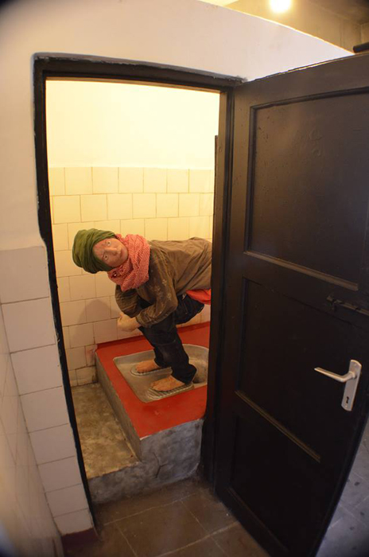
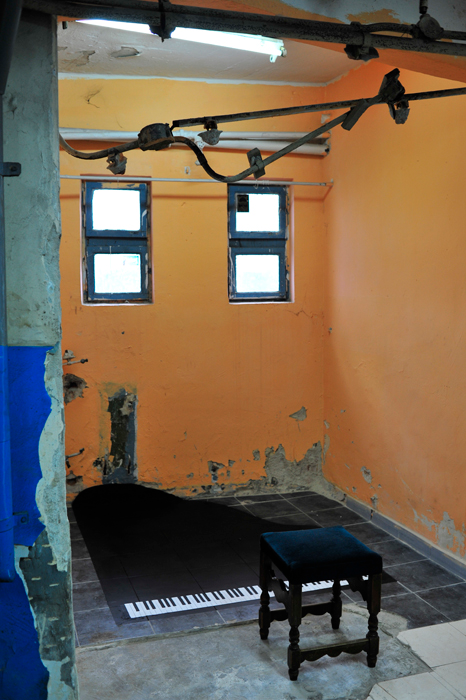

Scena de gen


Work in Progress Episodul 3: Garajul Ciclop, 2013
Work in Progress este un colectiv ce identifica spatii din Bucuresti si nu numai, care se deosebesc printr-o lipsa generata de timp sau conditii fizice si care în prezent nu mai sunt în atentia publicului. Work in Progress aduna laolalta artisti din diferite domenii (arta stradala, instalatii, performance etc.), care revitalizeaza spatiul prin interventii artistice si îl readuc în sfera de interes public. Important este momentul în sine, perioada de lucru a artistilor, acel work in progress, care devine parte din istoria spatiului ales si îi ofera un nou curs, o continuitate în existenta sa.
Instalatie, obiect, sunet, vopsea, in doua spatii alaturate din parcarea Ciclop
Proiectul exploreaza ideea de vecini, vecinatate, situatii conflictuale, spatiul privat si permisivitatea acestuia intr-un conglomerat de apartamente.
Echipa proiectului: Iustin Moldovan, Alina Bucur, Mihai Chitu